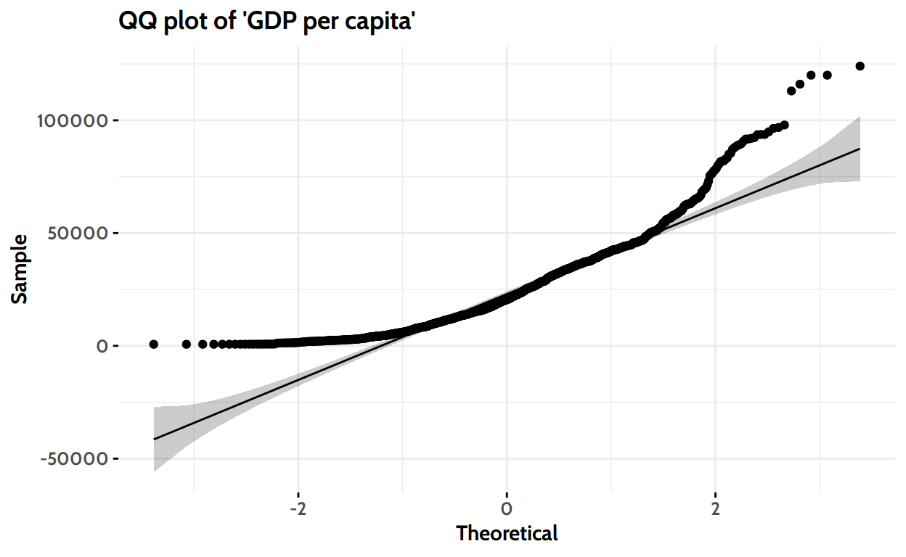

Introduction
Waste is an international matter: everyone produces it. Each and every country has to deal with it, and “dealing” means at least two things: the actual management of the waste and coping with the costs and consequences of waste production.

(Preview image credits: Offiikart, CC0, via Wikimedia Commons)
About Waste
“Wastes” are substances or objects which are disposed of or are intended to be disposed of or are required to be disposed of by the provisions of national law.1
The consequences are abundant and quite severe. The Wikipedia article on waste mentions three “costs” waste causes:
- environmental costs: starting from toxic effects of hazardous waste on the environment and water, to direct or indirect health issues for animals and humans (e.g. toxic gases when waste is burnt or facilitation of spreading of plagues by vermins and rodents), and the production of green house gases
- social costs: waste management often is linked to social injustice, as waste is frequently moved from developed countries to developing regions; often causing even more problems for already politically, economically environmntally chalanged communities.
- economic cost: the correct management of waste is an expensive endeavour. If a community wants to avoid social and environmental damage, the proper handling and disposition is expensive and has to be payed for by someone: be it the producers themselves or the society via taxes.
I want to get an understanding on worldwide waste production and analyze, whether there are trends in countries or regions.
As always, if you’re not interested into how to get there, you can jump to Conclusions.
United Nations Data
The public data repository of the United Nations “UNdata” offers many datasets, including a dataset on “Total amount of municipal waste collected” for the years 1990 - 2015. It is based on official statistics provided by national offices or environmental ministries in response to the biennial UNSD/UNEP Questionnaire on Environment Statistics, complemented with data from OECD and Eurostat.
Municipal waste, collected by or on behalf of municipalities, by public or private enterprises, includes waste originating from: households, commerce and trade, small businesses, office buildings and institutions (schools, hospitals, government buildings). It also includes bulky waste (e.g., white goods, old furniture, mattresses) and waste from selected municipal services, e.g., waste from park and garden maintenance, waste from street cleaning services (street sweepings, the content of litter containers, market cleansing waste), if managed as waste. The definition excludes waste from municipal sewage network and treatment, municipal construction and demolition waste.
Municipal waste collected refers to waste collected by or on behalf of municipalities, as well as municipal waste collected by the private sector. It includes mixed waste, and fractions collected separately for recovery operations (through door-to-door collection and/or through voluntary deposits). For data sourced from OECD and Eurostat, values correspond to municipal waste generated.2
The waste-data was downloaded as a semicolon-separated txt file from http://data.un.org/Data.aspx?d=ENV&f=variableID:1814&c=2,3,4,5&s=countryName:asc,yr:desc&v=4 on January 24th 2021.
License: As I couldn’t find any specific license mentioned on the UNdata website, I refer to their “Terms of Use”:
“All data and metadata provided on UNdata’s website are available free of charge and may be copied freely, duplicated and further distributed provided that UNdata is cited as the reference.”
Packages and Sessioninfo
Show code
R version 4.0.4 (2021-02-15)
Platform: x86_64-pc-linux-gnu (64-bit)
Running under: Ubuntu 20.04.2 LTS
Matrix products: default
BLAS: /usr/lib/x86_64-linux-gnu/blas/libblas.so.3.9.0
LAPACK: /usr/lib/x86_64-linux-gnu/lapack/liblapack.so.3.9.0
locale:
[1] LC_CTYPE=de_DE.UTF-8 LC_NUMERIC=C
[3] LC_TIME=de_DE.UTF-8 LC_COLLATE=de_DE.UTF-8
[5] LC_MONETARY=de_DE.UTF-8 LC_MESSAGES=de_DE.UTF-8
[7] LC_PAPER=de_DE.UTF-8 LC_NAME=C
[9] LC_ADDRESS=C LC_TELEPHONE=C
[11] LC_MEASUREMENT=de_DE.UTF-8 LC_IDENTIFICATION=C
attached base packages:
[1] stats graphics grDevices utils datasets methods
[7] base
other attached packages:
[1] plotly_4.9.3 rstatix_0.6.0 ggpubr_0.4.0
[4] broom_0.7.3 countrycode_1.2.0 rmarkdown_2.6.4
[7] forcats_0.5.0 stringr_1.4.0 dplyr_1.0.3
[10] purrr_0.3.4 readr_1.4.0 tidyr_1.1.2
[13] tibble_3.0.5 ggplot2_3.3.3 tidyverse_1.3.0
[16] r2symbols_0.1
loaded via a namespace (and not attached):
[1] Rcpp_1.0.6 lubridate_1.7.9.2 tufte_0.9
[4] assertthat_0.2.1 digest_0.6.27 R6_2.5.0
[7] cellranger_1.1.0 backports_1.2.1 reprex_0.3.0
[10] evaluate_0.14 httr_1.4.2 pillar_1.4.7
[13] rlang_0.4.10 lazyeval_0.2.2 curl_4.3
[16] readxl_1.3.1 rstudioapi_0.13 data.table_1.13.6
[19] car_3.0-10 xaringanExtra_0.2.4 foreign_0.8-81
[22] htmlwidgets_1.5.3 munsell_0.5.0 compiler_4.0.4
[25] modelr_0.1.8 xfun_0.20 pkgconfig_2.0.3
[28] htmltools_0.5.1.1 downlit_0.2.1 tidyselect_1.1.0
[31] rio_0.5.16 viridisLite_0.3.0 fansi_0.4.2
[34] crayon_1.3.4 dbplyr_2.0.0 withr_2.4.0
[37] grid_4.0.4 jsonlite_1.7.2 gtable_0.3.0
[40] lifecycle_0.2.0 DBI_1.1.1 magrittr_2.0.1
[43] scales_1.1.1 zip_2.1.1 carData_3.0-4
[46] cli_2.2.0 stringi_1.5.3 ggsignif_0.6.0
[49] fs_1.5.0 xml2_1.3.2 ellipsis_0.3.1
[52] generics_0.1.0 vctrs_0.3.6 openxlsx_4.2.3
[55] distill_1.2 tools_4.0.4 glue_1.4.2
[58] hms_1.0.0 abind_1.4-5 yaml_2.2.1
[61] colorspace_2.0-0 rvest_0.3.6 knitr_1.30
[64] haven_2.3.1 Reading and Inspecting the Data
The Waste Data
The downloaded csv contains some metadata starting from row 1588, which returned an error reading the whole file into a single tibble. Therefore I split it up into the actual data waste_loaded and the meta data waste_meta.
Show code
waste_loaded <-read_csv("../../../data_sources/2021_UNdata/environment/UNdata_Export_20210124_102304044.csv",
n_max = 1587)
waste_meta <- as_tibble(read_lines("../../../data_sources/2021_UNdata/environment/UNdata_Export_20210124_102304044.csv",
skip = 1590, skip_empty_rows = TRUE, locale = locale(encoding = "UTF-8"))) %>%
separate(value, into = c("fn_id", "fn_content"), sep = ",", remove = TRUE) %>%
mutate(fn_id = as.numeric(str_remove_all(fn_id, '"')),
fn_content = str_remove_all(fn_content, '^"'),
fn_content = str_remove_all(fn_content, '"$'))
paged_table(head(waste_loaded, 10))
There are 1587 rows and 5 columns in this dataset.
Economic And Population Data
We’ll pull in tables on population data (pop) and on the GDP per capita (eco_GDPpc).
For this I use data from the gapminder foundation, as their data seemed more complete than the UN data (which didn’t provide data for each year, but roughly only every fifth year).
Gapminder uses data e.g. from the World Bank and provides this data under an open license:
FREE DATA FROM WORLD BANK VIA GAPMINDER.ORG, released under the CC-BY LICENSE
Show code
# A tibble: 8 x 3
Country Year Population
<chr> <int> <dbl>
1 Afghanistan 1800 3280000
2 Afghanistan 1801 3280000
3 Afghanistan 1802 3280000
4 Afghanistan 1803 3280000
5 Afghanistan 1804 3280000
6 Afghanistan 1805 3280000
7 Afghanistan 1806 3280000
8 Afghanistan 1807 3280000Show code
# load gdp data
eco_loaded <- read_csv("../../../data_sources/gapminder/income_per_person_gdppercapita_ppp_inflation_adjusted_20210130.csv")
eco_GDPpc <- eco_loaded %>%
pivot_longer(-country, names_to = "Year", values_to = "GDPpc", names_transform = list("Year" = as.integer)) %>%
rename(Country = country)
eco_GDPpc%>%
head(14)
# A tibble: 14 x 3
Country Year GDPpc
<chr> <int> <dbl>
1 Afghanistan 1800 603
2 Afghanistan 1801 603
3 Afghanistan 1802 603
4 Afghanistan 1803 603
5 Afghanistan 1804 603
6 Afghanistan 1805 603
7 Afghanistan 1806 603
8 Afghanistan 1807 603
9 Afghanistan 1808 603
10 Afghanistan 1809 603
11 Afghanistan 1810 604
12 Afghanistan 1811 604
13 Afghanistan 1812 604
14 Afghanistan 1813 604In the next step we will clean the dataset.
Cleaning the Data
We may need the footnotes later, when we’re interpreting the data, but for now I’ll drop this column. Apart from the cleaning, I did some plausibility checks. If you’re interested, you can find them “below deck”, since they did not contribute to the main story.
Story line
First, let’s have look at the included variables. It seems, that there are no missing values3:
Show code
Country_Area Year Value
Length:1587 Min. :1990 Min. : 4.64
Class :character 1st Qu.:2001 1st Qu.: 471.50
Mode :character Median :2006 Median : 2719.00
Mean :2006 Mean : 12086.31
3rd Qu.:2011 3rd Qu.: 6274.50
Max. :2016 Max. :234471.00
Unit
Length:1587
Class :character
Mode :character
Is there always the same Unit used?
Show code
waste %>% count(Unit)
# A tibble: 1 x 2
Unit n
* <chr> <int>
1 1000 tonnes 1587In fact this is the case. We can drop the unit column and keep it in mind for the rest of the analysis:
Show code
waste <- waste %>% select(-Unit)
Luckily, there is not much cleaning needed at this stage. We can gladly move on to the exploratory analysis.
Below deck
The UNdata website states that they collected data from 1990 to 2015.
Validating the most recent values
Let’s check, if the 2016-data seems valid and the description on the website is just outdated. To do this we’ll compare the values of 2016 to the countries’ values of the years before:
Show code
waste %>%
filter(Year >= 2014) %>%
pivot_wider(names_from = Year, names_prefix = "Year_", values_from = Value) %>%
select(Country_Area, Year_2014, Year_2015, Year_2016) %>%
paged_table()
Looking through the data, the entries for 2016 seem plausible. Wherever there were values to compare, they fell within the same range of the years before. According to this validation, I think it’s reasonable to keep the 2016 data. They probably didn’t update the description on the datasets website.
Validating the Value-Column
The Value column seems quite unevenly distributed. Let’s inspect it visually:
Show code
waste %>%
ggplot(aes(Value)) +
geom_histogram() +
scale_y_log10() +
labs(x = "Waste in 1000 tonns",
y = "Number of reported values",
title = "Distribution of the 'Value' column",
caption = "Data from the United Nations (http://data.un.org)") +
theme_minimal() +
theme(text = element_text(
family = "Cabin"),
plot.title = element_text(
face = "bold",
hjust = 0),
axis.title = element_text(
face = "bold",
size = rel(1)),
axis.text = element_text(
face = "bold",
size = rel(0.85)))
Figure 1: Distribution of reported waste across all years and countries.
There are some extreme values here. We need to check these before we continue with the analysis.
Show code
waste %>%
filter(Value > 100000) %>%
arrange(desc(Value)) %>%
paged_table()
Both China and the United States of America have a huge population and economy. I can believe that they produce a lot of waste. But what is Botswana doing there on the last page of the above table? Is this an outlier?
Show code
waste %>%
filter(Country_Area == "Botswana")
# A tibble: 2 x 3
Country_Area Year Value
<chr> <dbl> <dbl>
1 Botswana 2015 85946.
2 Botswana 2013 130999.Botswana reported in two years: 2013 and 2015. As of 2018 Botswana had a total estimated population of only 2.25 million4. It seems impossible, that they produce as much waste as China or the USA. On the other hand, the two reported values are not that far apart from each other, which makes each one more plausible. But since there are only two entries, this is quite a weak confirmation. After some consideration and plotting along the way, I decided to exclude Botswana from further analysis. This exclusion will be done at a later point, when creating the tibble waste_pop_gdp.
This concludes this “Below deck” section. If you’ve already read the main story line until here, you can just scroll on to to the next section. If not, I recommend reading the main line of this section before and continue there.
Participating Countries
There are 128 countries included in this dataset:
Show code
options(width = 60)
waste %>%
dplyr::distinct(Country_Area, .keep_all = TRUE) %>%
distinct(Country_Area) %>%
paged_table()
As the data is collected from questionnaires, sent to the competent authorities in each country, the quality and completeness depends on the reporting-motivation of the countries. Let’s see, how many countries replied to the questionnaires over the years:
Show code
waste %>%
group_by(Year) %>%
summarise(n_countries = n()) %>%
ggplot(aes(Year, n_countries)) +
geom_col() +
scale_x_continuous(breaks = c(1990, 1995, 2000, 2005, 2010, 2015),
labels = c("1990", "1995", "2000", "2005", "2010", "2015")) +
# geom_vline(xintercept = 1995, color = "red") +
# annotate("text", x = 1996, y = 80, label = "1995", size = 3, color = "red") +
annotate("rect",
xmin = 1994.5, xmax = 2015.5,
ymin = 0, ymax = 100, fill = "#3d437e", alpha = 0.5) +
labs(x = "Year",
y = "Number of countries",
title = "Number of countries that reported values over the years",
caption = "Data from the United Nations (http://data.un.org)") +
theme_minimal() +
theme(text = element_text(
family = "Cabin"),
plot.title = element_text(
face = "bold",
hjust = 0),
axis.title = element_text(
# color = rgb(105, 105, 105, maxColorValue = 255),
face = "bold",
size = rel(1)),
axis.text = element_text(
# color = rgb(105, 105, 105, maxColorValue = 255),
face = "bold",
size = rel(0.85)))
Figure 2: Number of reporting countries over the years.
There is a considerable jump in the participating countries from 1994 to 1995 and a drop in the year 2016. As I want a data basis that is as consistent as possible, I’ll just keep the 20 years from 1995 to 2015 as waste_20 (marked in blue).
Combining the waste data with population and economic data
To analyse the development over the years, we need to take into account the population development. To achieve this, we can join waste_20 with pop. And while we’re at it, lets add the GDP data as well and store all in waste_pop_gdp. Since we want to only use countries where there is waste-, population-, and economic data, we’ll use inner_join.
Show code
waste_20_ISO <- waste_20 %>%
mutate(ISO = countrycode(Country, origin = "country.name", destination = "iso3c"))
pop_ISO <- pop %>%
mutate(ISO = countrycode(Country, origin = "country.name", destination = "iso3c"))
eco_GDPpc_ISO <- eco_GDPpc %>%
mutate(ISO = countrycode(Country, origin = "country.name", destination = "iso3c"))
waste_pop_gdp <- waste_20_ISO %>%
inner_join(pop_ISO, by = c("Year", "ISO"), suffix = c("_waste", "_pop")) %>%
inner_join(eco_GDPpc_ISO, by = c("Year", "ISO")) %>%
rename(waste_abs = Value) %>%
mutate(waste_rel = waste_abs / Population *1000) %>%
select(ISO, Country, Year, waste_abs, waste_rel, Population, GDPpc) %>%
filter(ISO != "BWA")
waste_pop_gdp %>%
head(30) %>%
paged_table()
Show code
waste_pop_gdp %>%
summary()
ISO Country Year
Length:1414 Length:1414 Min. :1995
Class :character Class :character 1st Qu.:2001
Mode :character Mode :character Median :2006
Mean :2006
3rd Qu.:2011
Max. :2015
waste_abs waste_rel Population
Min. : 5.07 Min. :0.000829 Min. :3.070e+04
1st Qu.: 620.25 1st Qu.:0.274029 1st Qu.:3.090e+06
Median : 2888.00 Median :0.411155 Median :8.350e+06
Mean : 12123.54 Mean :0.445070 Mean :4.173e+07
3rd Qu.: 7024.00 3rd Qu.:0.559332 3rd Qu.:2.608e+07
Max. :234471.00 Max. :4.305063 Max. :1.410e+09
GDPpc
Min. : 693
1st Qu.: 10125
Median : 20550
Mean : 24717
3rd Qu.: 35800
Max. :124000 Now, that we have all required data, let’s head on to the actual analysis.
Development over the years
First of all, let’s see how the overall waste collection in absolute numbers developed over time. As not all countries reported their waste production every year, I’ll later set the waste in relation to the population of the reporting countries each year. This way we can perform the analysis independently of the number an size of the countries that reported each year. I will call this ‘waste per capita’.
Absolute waste over time
As mentioned, the first aspect is the absolute amount of waste that was reported. I’ll have a look at the masses over time and then provide a ranking of the Top 10 waste collectors. To account for the fact that not every country reports every year, this will be a ranking of the average in the last five years.
Note that a higher amount of collected waste does not necessarily mean more produced waste. A country with a comprehensive waste collection and disposition infrastructure might turn out ‘worse’ in this ranking than regions where there is no proper waste management and large portions of household/municipal waste is being disposed of improperly.
Absolute Waste
Show code
waste_pop_gdp %>%
group_by(Year) %>%
summarise(total_waste_abs = sum(waste_abs) / 1000) %>%
ggplot(aes(Year, total_waste_abs)) +
geom_point(color = "#3d437e") +
labs(x = "Year",
y = "Reported waste [in million tonnes]",
title = "Yearly amount of waste over time",
subtitle = "Reported to the UN between 1995 - 2015",
caption = "Using data from\nUnited Nations (http://data.un.org)") +
theme_minimal() +
theme(text = element_text(
family = "Cabin"),
plot.title = element_text(
face = "bold",
hjust = 0),
axis.title = element_text(
# color = rgb(105, 105, 105, maxColorValue = 255),
face = "bold",
size = rel(1)),
axis.text = element_text(
# color = rgb(105, 105, 105, maxColorValue = 255),
face = "bold",
size = rel(0.85)))
Figure 3: Absolute amount of waste reported to the UN between 1995 - 2015
The jump in 2000 seems quite significant. Since these are absolute numbers, regardless of how many countries reported in 2000 and how large the countries’ populations and economies are, this could be due to more countries reporting. However, as seen in Figure 2 there is more a gradual increase of countries reporting and not a comparable step as seen here. It could be a systematic error, too. However I cannot prove this latter hypothesis.5
It is also unclear what happened in 2015. This might be related to the declining number of reporting countries from 2011-2015, which can be seen in Figure 2.
Who collects the most amount of municipal waste?
Show code
# A tibble: 10 x 3
Country mean_waste_mio_tonns waste_percap_kg
<chr> <dbl> <dbl>
1 United States 230. 731
2 China 175. 126
3 Egypt 94.9 1098
4 Germany 50.5 621
5 Japan 45 351
6 Mexico 41.6 357
7 France 34.4 539
8 Brazil 33 164
9 Turkey 31 409
10 United Kingdom 31 477Below deck Is there a real jump up in 2000 and a sudden drop again in 2015? Let’s theorize…
Hypothisis 1: It’s due to a systematic error
As mentioned before, there is this time frame from 2000 to around 2014, where the reported amount seems to be “elevated” but basically still following the overall trend. If this was due to one or a few “big producers” reporting in these years, I wouldn’t expect all those 14 years “elevated”. Instead I’d assume to see only a singular jump every now and then, whenever these countries reported in. The continuous elevation of these 14 years makes a systematic error possible, especially when taking into consideration the low value of 2015. Here’s the graphical representation of what I’m saying:
Show code
waste_pop_gdp_ele <- waste_pop_gdp %>%
mutate(elevated = ifelse(Year < 2000 | Year > 2012, FALSE, TRUE))
waste_pop_gdp_ele %>%
group_by(Year) %>%
summarise(yearly_waste_abs = sum(waste_abs)) %>%
ungroup() %>%
mutate(elevated = ifelse(Year < 2000 | Year > 2014, FALSE, TRUE)) %>%
ggplot(aes(Year, yearly_waste_abs, group = elevated, color = elevated)) +
geom_point() +
geom_smooth(method = "lm", se = FALSE) +
scale_color_manual(values = c("#9f3857", "#3d437e")) +
labs(x = "Year",
y = "1000 Tonnes",
title = "Visualization of Hypothesis 1: there's a systematic error",
subtitle = "Amount of waste reported to the UN between 1995 - 2015",
caption = "Using data from\nUnited Nations (http://data.un.org)") +
theme_minimal() +
theme(legend.position = "none") +
theme(text = element_text(
family = "Cabin"),
plot.title = element_text(
face = "bold",
hjust = 0),
axis.title = element_text(
# color = rgb(105, 105, 105, maxColorValue = 255),
face = "bold",
size = rel(1)),
axis.text = element_text(
# color = rgb(105, 105, 105, maxColorValue = 255),
face = "bold",
size = rel(0.85)))
Figure 4: Representation of hypothesis 1: There is a systematic reporting issue here lifting the years 2000 - 2014 up by roughly 10-15 million tonnes.
Hypothesis 2: This is a true effect
Of course this could also be valid data and the increase in waste is due to more countries or more people included (via the reporting countries they live in).
Show code
waste_pop_gdp %>%
group_by(Year) %>%
summarise(cum_people = sum(Population) / 1000000) %>%
mutate(is_2000 = ifelse(Year == 2000, TRUE, FALSE)) %>%
ggplot(aes(Year, cum_people, fill = is_2000)) +
geom_col() +
scale_x_continuous(breaks = c(1990, 1995, 2000, 2005, 2010, 2015),
labels = c("1990", "1995", "2000", "2005", "2010", "2015")) +
# geom_vline(xintercept = 1995, color = "red") +
# annotate("text", x = 1996, y = 80, label = "1995", size = 3, color = "red") +
scale_fill_manual(values=c("#AAAAAA", "#3d437e"), name = "Producer Category") +
labs(x = "Year",
y = "Number of people [in millions]",
title = "Number of people represented by the reporting countries",
subtitle = "As reported to the UN from 1995 to 2015",
caption = "Using data from\nUnited Nations (http://data.un.org) and\nFree data from World Bank via gapminder.org ( CC-BY LICENSE)") +
theme_minimal() +
theme(text = element_text(
family = "Cabin"),
plot.title = element_text(
face = "bold",
hjust = 0),
axis.title = element_text(
# color = rgb(105, 105, 105, maxColorValue = 255),
face = "bold",
size = rel(1)),
axis.text = element_text(
# color = rgb(105, 105, 105, maxColorValue = 255),
face = "bold",
size = rel(0.85)),
legend.position = "none")
Figure 5: Number of people included in the statistics via the countries that reported in each year. Notice the that the number of people almost doubled in 2000 (marked blue).
The number of people doubled in 2000, so this could explain the sudden rise in absolute waste collected. Since the reported waste did not double as well, but ‘only’ increased around 25%, this would imply that the “additional people” had quite a low ‘per capita’ waste collection. As you’ll see later, this would fit the drop in yearly average ‘per capita’ which can also be observed in the year 2000.
One last thing is the sudden drop in reported waste in 2015, which is not reflected in the number of people. Unfortunately I couldn’t resolve this bit at the moment, since I couldn’t find any information regarding possible systematic reporting changes on the UNdata website.
While it would be very welcome to see a true downward trend, at this point I’m not yet convinced that this is the case. For now I’ll go with the second hypothesis, but we’ll have to take a deeper dive into the data on the country level, to see if there’s more to discover.
Waste relative to population over time
To mitigate effects of irregular reporting and changing participants each year, we’ll set the waste in relation to the number of people that were represented by the reporting countries each year.
Show code
yearly_waste_pop_gdp <- waste_pop_gdp %>%
group_by(Year) %>%
summarise(sum_waste = sum(waste_abs), sum_pop = sum(Population)) %>%
mutate(yearly_waste_rel = (sum_waste / sum_pop) * 1000,
yearly_waste_rel_kg = yearly_waste_rel *1000) %>%
ungroup()
yearly_waste_pop_gdp %>%
ggplot(aes(Year, yearly_waste_rel_kg)) +
geom_point(color = "#3d437e") +
labs(x = "Year",
y = "Reported waste 'per capita' [in kg]",
title = "Yearly amount of waste 'per capita'",
subtitle = " reported to the UN between 1995 - 2015",
caption = "Using data from\nUnited Nations (http://data.un.org) and\nFree data from World Bank via gapminder.org ( CC-BY LICENSE)") +
theme_minimal() +
theme(text = element_text(
family = "Cabin"),
plot.title = element_text(
face = "bold",
hjust = 0),
axis.title = element_text(
# color = rgb(105, 105, 105, maxColorValue = 255),
face = "bold",
size = rel(1)),
axis.text = element_text(
# color = rgb(105, 105, 105, maxColorValue = 255),
face = "bold",
size = rel(0.85)))
Figure 6: Relative amount of waste ‘per capita’ reported to the UN between 1995 - 2015
It is astounding, how much waste is collected: since 2000 the average collected municipal waste per capita per year was between 250kg and 300kg. Sure, “municipal waste” includes not just the mixed household waste6, but this huge amount of waste still has to be disposed of.
Interestingly we see a steep drop in the year 2000. If you’ve read the previous “Below deck” section you might know this could be linked to a sudden increase in the populations included in the reporting. They seem to lower the average quite a bit.
Comparing the countries I: distribution
How are the values of waste per capita of all countries distributed over the years?
Show code
waste_pop_gdp %>%
mutate(waste_cat = case_when(
waste_rel < 1 ~ "low",
waste_rel >= 1 & waste_rel < 2 ~ "intermediate",
waste_rel >= 2 ~ "high"
)) %>%
ggplot(aes(factor(Year), waste_rel)) +
geom_point(aes(color = waste_cat), position = "jitter",size = 2) +
geom_boxplot(outlier.alpha = 0) +
scale_color_manual(values=c("#9f3857", "#3d437e", "#EEEEEE"), name = "Producer Category") +
labs(x = "Year",
y = "Tonnes of reported waste 'per capita'",
title = "Country-distributions of yearly amount of waste 'per capita'",
subtitle = "reported to the UN between 1995 - 2015",
caption = "Using data from\nUnited Nations (http://data.un.org) and\nFree data from World Bank via gapminder.org ( CC-BY LICENSE)") +
theme_minimal() +
theme(text = element_text(
family = "Cabin"),
plot.title = element_text(
face = "bold",
hjust = 0),
axis.title = element_text(
# color = rgb(105, 105, 105, maxColorValue = 255),
face = "bold",
size = rel(1)),
axis.text = element_text(
# color = rgb(105, 105, 105, maxColorValue = 255),
face = "bold",
size = rel(0.85)),
axis.text.x = element_text(angle = 45, hjust = 1),
legend.position = "bottom")
Figure 7: Country-distributions of yearly amount of waste ‘per capita’
The majority of countries collect less than 1 ton per person per year. Accordingly the complete boxplots including the whiskers are lying below the 1 ton line. Some countries however collect more than one ton (blue) or even more than 2 tonnes (red) per person and per year. These are:
Show code
print("Countries with 1 - 2 tonnes of waste per year per capita:")
[1] "Countries with 1 - 2 tonnes of waste per year per capita:"# A tibble: 8 x 1
Country
<chr>
1 Antigua and Barbuda
2 Egypt
3 Kyrgyz Republic
4 Maldives
5 Monaco
6 Montenegro
7 Qatar
8 Singapore Show code
print("Countries with more than 2 tonnes of waste per year per capita:")
[1] "Countries with more than 2 tonnes of waste per year per capita:"# A tibble: 1 x 1
Country
<chr>
1 Kuwait These figures are to be seen as what they are: numbers reported to a questionnaire. Please don’t see this as a “shaming”. Consider the options:
- They might really produce that much waste per capita, or
- they might include waste-categories into “municipal waste” that others don’t, or,
- they collect a bigger fraction of the produced waste, while others only collect a small part and the rest will be discarded by the population and is not accounted for in these numbers; and finally
- they might just be ‘honest’, while others report lower numbers.
Comparing the countries II: development over time (overview)
The following plot is not very pretty, but it gives a rough visual clue for each country over time.
Show code
waste_pop_gdp %>%
mutate(waste_rel_tonns = round(waste_rel * 1000)) %>%
ggplot(aes(Year, waste_rel_tonns)) +
geom_point(color = "#3d437e") +
facet_wrap( ~ ISO, ncol = 7, scales = "free_y")+
labs(x = "Year",
y = "Reported waste 'per capita' [in kg],\n(each plot with free scales)",
title = "Reported waste 'per capita' over time in each participating country",
caption = "Using data from\nUnited Nations (http://data.un.org) and\nFree data from World Bank via gapminder.org ( CC-BY LICENSE)") +
theme_bw() +
theme(text = element_text(
family = "Cabin"),
plot.title = element_text(
face = "bold",
hjust = 0),
axis.title = element_text(
# color = rgb(105, 105, 105, maxColorValue = 255),
face = "bold",
size = rel(1)),
axis.text = element_text(
# color = rgb(105, 105, 105, maxColorValue = 255),
face = "bold",
size = rel(0.85)),
axis.text.x = element_text(angle = 45, hjust = 1))
![Scatterplot small multiples for all reporting countries over 20 years. The coutries show groups of similar development: steady growth/decline in some or a bell shaped curve in others showing a trend reversal.
Legend: ALB: Albania, DZA: Algeria, AND: Andorra, AGO: Angola, ATG: Antigua and Barbuda, ARG: Argentina, ARM: Armenia, AUS: Australia, AUT: Austria, AZE: Azerbaijan, BHS: Bahamas, BGD: Bangladesh, BLR: Belarus, BEL: Belgium, BLZ: Belize, BTN: Bhutan, BOL: Bolivia, BIH: Bosnia and Herzegovina, BRA: Brazil, BGR: Bulgaria, BFA: Burkina Faso, BDI: Burundi, CPV: Cape Verde, KHM: Cambodia, CMR: Cameroon, CHL: Chile, CHN: China, COL: Colombia, CRI: Costa Rica, HRV: Croatia, CUB: Cuba, CYP: Cyprus, CZE: Czech Republic, DNK: Denmark, DMA: Dominica, ECU: Ecuador, EGY: Egypt, EST: Estonia, FIN: Finland, FRA: France, GEO: Georgia, DEU: Germany, GRC: Greece, HND: Honduras, HUN: Hungary, ISL: Iceland, IDN: Indonesia, IRQ: Iraq, IRL: Ireland, ISR: Israel, ITA: Italy, JAM: Jamaica, JPN: Japan, JOR: Jordan, KAZ: Kazakhstan, KWT: Kuwait, KGZ: Kyrgyz Republic, LVA: Latvia, LBN: Lebanon, LTU: Lithuania, LUX: Luxembourg, MDG: Madagascar, MYS: Malaysia, MDV: Maldives, MLT: Malta, MHL: Marshall Islands, MUS: Mauritius, MEX: Mexico, MCO: Monaco, MNE: Montenegro, MAR: Morocco, NPL: Nepal, NLD: Netherlands, NZL: New Zealand, NER: Niger, NOR: Norway, PAN: Panama, PER: Peru, PHL: Philippines, POL: Poland, PRT: Portugal, QAT: Qatar, KOR: South Korea, MDA: Moldova, ROU: Romania, LCA: St. Lucia, VCT: St. Vincent and the Grenadines, WSM: Samoa, SEN: Senegal, SRB: Serbia, SGP: Singapore, SVK: Slovak Republic, SVN: Slovenia, ESP: Spain, LKA: Sri Lanka, PSE: Palestine, SDN: Sudan, SUR: Suriname, SWE: Sweden, CHE: Switzerland, THA: Thailand, MKD: North Macedonia, TGO: Togo, TTO: Trinidad and Tobago, TUN: Tunisia, TUR: Turkey, UGA: Uganda, UKR: Ukraine, ARE: United Arab Emirates, GBR: United Kingdom, TZA: Tanzania, USA: United States, URY: Uruguay, YEM: Yemen, ZMB: Zambia, ZWE: Zimbabwe](world-of-waste_files/figure-html5/unnamed-chunk-22-1.png)
Figure 8: Scatterplot small multiples for all reporting countries over 20 years. The coutries show groups of similar development: steady growth/decline in some or a bell shaped curve in others showing a trend reversal. Legend: ALB: Albania, DZA: Algeria, AND: Andorra, AGO: Angola, ATG: Antigua and Barbuda, ARG: Argentina, ARM: Armenia, AUS: Australia, AUT: Austria, AZE: Azerbaijan, BHS: Bahamas, BGD: Bangladesh, BLR: Belarus, BEL: Belgium, BLZ: Belize, BTN: Bhutan, BOL: Bolivia, BIH: Bosnia and Herzegovina, BRA: Brazil, BGR: Bulgaria, BFA: Burkina Faso, BDI: Burundi, CPV: Cape Verde, KHM: Cambodia, CMR: Cameroon, CHL: Chile, CHN: China, COL: Colombia, CRI: Costa Rica, HRV: Croatia, CUB: Cuba, CYP: Cyprus, CZE: Czech Republic, DNK: Denmark, DMA: Dominica, ECU: Ecuador, EGY: Egypt, EST: Estonia, FIN: Finland, FRA: France, GEO: Georgia, DEU: Germany, GRC: Greece, HND: Honduras, HUN: Hungary, ISL: Iceland, IDN: Indonesia, IRQ: Iraq, IRL: Ireland, ISR: Israel, ITA: Italy, JAM: Jamaica, JPN: Japan, JOR: Jordan, KAZ: Kazakhstan, KWT: Kuwait, KGZ: Kyrgyz Republic, LVA: Latvia, LBN: Lebanon, LTU: Lithuania, LUX: Luxembourg, MDG: Madagascar, MYS: Malaysia, MDV: Maldives, MLT: Malta, MHL: Marshall Islands, MUS: Mauritius, MEX: Mexico, MCO: Monaco, MNE: Montenegro, MAR: Morocco, NPL: Nepal, NLD: Netherlands, NZL: New Zealand, NER: Niger, NOR: Norway, PAN: Panama, PER: Peru, PHL: Philippines, POL: Poland, PRT: Portugal, QAT: Qatar, KOR: South Korea, MDA: Moldova, ROU: Romania, LCA: St. Lucia, VCT: St. Vincent and the Grenadines, WSM: Samoa, SEN: Senegal, SRB: Serbia, SGP: Singapore, SVK: Slovak Republic, SVN: Slovenia, ESP: Spain, LKA: Sri Lanka, PSE: Palestine, SDN: Sudan, SUR: Suriname, SWE: Sweden, CHE: Switzerland, THA: Thailand, MKD: North Macedonia, TGO: Togo, TTO: Trinidad and Tobago, TUN: Tunisia, TUR: Turkey, UGA: Uganda, UKR: Ukraine, ARE: United Arab Emirates, GBR: United Kingdom, TZA: Tanzania, USA: United States, URY: Uruguay, YEM: Yemen, ZMB: Zambia, ZWE: Zimbabwe
There is quite a heterogeneity across the countries, not just in the scales, but also in the appearance of the development over time:
- One frequent scheme is a steady upward trend over the whole period.
- Another frequent scheme is a bell shaped curve or an upside down U, with the peak quite often being at around 2005-2010.
- Only few countries show a steadily falling curve over the whole period.
- Some countries only reported one or two values and therefore they barely show a clear trend.
Comparing the countries II: development over time (deep dive)
Due to the bell shaped curve in some countries a comparison of the trend is difficult. To make things easier, I will only look at the ten years from 2005 to 2015. Since 2005 was the peak in many countries with a bell shaped curve, the development after that should be more or less steady. But this is still 10 years of development, so we should gain a good insight in the major trend in these countries as well.
For better comparison between the many countries we’ll scale the values to a baseline and calculate all other values as percentage of the baseline value. This baseline will be separately computed for each country as the 5-year-mean around 20057.
I will also remove all countries that had less than 3 observations in the last 10 years, since there is not much sense in deriving a trend from such few data points.
Show code
baseline <- waste_pop_gdp %>%
filter(Year >= 2003, Year <=2007) %>%
group_by(ISO) %>%
summarise(y2005_base = mean(waste_rel, na.rm = TRUE))
waste_pop_gdp_scaled <- waste_pop_gdp %>%
inner_join(baseline, by = "ISO") %>%
mutate(dev_fct = 100 * waste_rel / y2005_base)
w10_count <- waste_pop_gdp %>%
filter(Year >= 2005) %>%
count(ISO, sort = TRUE) %>%
filter(n >= 3)
Countries with significant change
Show code
waste_lmodels <- waste_pop_gdp_scaled %>%
filter(Year >= 2005) %>%
inner_join(w10_count, by = "ISO") %>%
nest(-c(ISO, Country)) %>%
mutate(model = map(data, ~ lm(dev_fct ~ Year, data = .)),
tidied = map(model, tidy)) %>%
unnest(tidied) %>%
mutate(p_adjusted = p.adjust(p.value, method = "holm"))
waste_lmodels %>%
filter(term == "Year", p_adjusted < 0.05) %>%
# arrange(desc(estimate)) %>%
mutate(falling = ifelse(estimate > 0, FALSE, TRUE)) %>%
ggplot(aes(reorder(Country, -estimate), estimate, fill = falling)) +
geom_col() +
scale_y_continuous(breaks = c(-5, 0, 5, 10, 15, 20, 25, 30), labels = c(-5, 0, 5, 10, 15, 20, 25, 30)) +
scale_fill_manual(values = c("#9f3857", "#3d437e")) +
coord_flip() +
labs(x = "Country",
y = "Annual growth / decline of reported waste 'per capita' over 10 years in percentage points",
title = "Estimated yearly change in reported waste 'per capita' over 10 years",
subtitle = "Yearly change in percentage points from 2005 to 2015",
caption = "Using data from\nUnited Nations (http://data.un.org) and\nFree data from World Bank via gapminder.org ( CC-BY LICENSE)") +
theme_minimal() +
theme(text = element_text(
family = "Cabin"),
plot.title = element_text(
face = "bold",
hjust = 0),
axis.title = element_text(
# color = rgb(105, 105, 105, maxColorValue = 255),
face = "bold",
size = rel(1)),
axis.text = element_text(
# color = rgb(105, 105, 105, maxColorValue = 255),
face = "bold",
size = rel(0.85)),
axis.text.x = element_text(angle = 0, hjust = 1)) +
theme(legend.position = "none")
Figure 9: Comparison of the trend in reported waste over time after fitting separate linear models for each country over the time of 2005-2015. Only countries with a p-value < 0.05 (after Bonferroni-Holm correction) are mentioned.
All countries
Here’s an overview of all countries with sufficient data in the time of interest. Can you find yours?
Show code
waste_pop_gdp_scaled %>%
filter(Year >= 2005) %>%
inner_join(w10_count, by = "ISO") %>%
ggplot(aes(Year, dev_fct)) +
geom_point() +
geom_smooth(method = "lm", se = FALSE, color = "#676fb5") +
scale_x_continuous(n.breaks = 6) +
facet_wrap(~ Country, ncol = 4, scales = "free_y") +
# scale_y_log10() +
labs(x = "Year",
y = "Reported waste 'per capita' [in % of the 2005-baseline]",
title = "Change in reported waste 'per capita' over 10 years",
subtitle = "Comparison of all countries from 2005 to 2015",
caption = "Using data from\nUnited Nations (http://data.un.org) and\nFree data from World Bank via gapminder.org ( CC-BY LICENSE)") +
theme_bw() +
theme(text = element_text(
family = "Cabin"),
plot.title = element_text(
face = "bold",
hjust = 0),
axis.title = element_text(
# color = rgb(105, 105, 105, maxColorValue = 255),
face = "bold",
size = rel(1)),
axis.text = element_text(
# color = rgb(105, 105, 105, maxColorValue = 255),
face = "bold",
size = rel(0.85)),
axis.text.x = element_text(angle = 90, hjust = 1)) +
theme(legend.position = "none")
![Small multiples to visualize the trend in each country over the time of 2005-2015. The values are standardized to each countrie's baseline, which was calculated as the 5-year-mean from 2003 - 2007 and set to 100%. For some countries a linear model doesn't fit at all (e.g. Portugal and Serbia), while for most a linear model is a good fit. For a few countries the values align alsmost too perfect with the regression line (e.g. Malysia). Please notice the variable y-scale for each scatterplot, so the slope of the lines cannot be compared visually.](world-of-waste_files/figure-html5/unnamed-chunk-25-1.png)
Figure 10: Small multiples to visualize the trend in each country over the time of 2005-2015. The values are standardized to each countrie’s baseline, which was calculated as the 5-year-mean from 2003 - 2007 and set to 100%. For some countries a linear model doesn’t fit at all (e.g. Portugal and Serbia), while for most a linear model is a good fit. For a few countries the values align alsmost too perfect with the regression line (e.g. Malysia). Please notice the variable y-scale for each scatterplot, so the slope of the lines cannot be compared visually.
Is the waste per capita correlated to the GDP per capita?
The hypothesis goes, that a “rich” society consumes more and by this produces more waste. As we have already combined the waste data with population and GDP values for each year and country we can easily do this.
Main Story Line
If we throw all the data into the correlation, we do in fact see a positive correlation of approx. \(\rho = 0.76\).
The following is an interactive visualization of all the years. Can you find your country? Feel free to zoom in and play around.
Show code
p0 <- waste_pop_gdp %>%
# filter(Year == 2009) %>%
ggplot(aes(GDPpc, waste_rel, text = paste0("Country: ", Country, "\nYear: ", Year))) +
geom_point(alpha = 0.4, size=1) +
geom_smooth(method = "lm", alpha = 0.5) +
labs(x = "GDP per capita in US$",
y = "Reported waste 'per capita' in tonns",
title = "\nReported waste 'per capita' versus GDP per capita",
caption = "Using data from\nUnited Nations (http://data.un.org) and\nFree data from World Bank via gapminder.org ( CC-BY LICENSE)") +
theme_minimal() +
theme(text = element_text(
family = "Cabin"),
plot.title = element_text(
face = "bold",
hjust = 0),
axis.title = element_text(
# color = rgb(105, 105, 105, maxColorValue = 255),
face = "bold",
size = rel(1)),
axis.text = element_text(
# color = rgb(105, 105, 105, maxColorValue = 255),
face = "bold",
size = rel(0.85)),
axis.text.x = element_text(angle = 45, hjust = 1)) +
theme(legend.position = "none")
ggplotly(p0)
As a last part let’s see, how the two variables are correlated in each country. The following table is limited to countries that had at least 5 datapoints over 20 years and showed a significant correlation (Spearman) after p-value correction:
Show code
w20_count <- waste_pop_gdp %>%
count(ISO, sort = TRUE) %>%
filter(n >= 5)
waste_pop_gdp %>%
inner_join(w20_count, by ="ISO") %>%
group_by(Country) %>%
cor_test(waste_rel, GDPpc, method = "spearman") %>%
mutate(p_adjusted = p.adjust(p, method = "holm")) %>%
filter(p_adjusted <= 0.05) %>%
arrange(cor) %>%
select(-c(statistic, p, method, var1, var2)) %>%
paged_table()
Interestingly in four countries there is a significant negative correlation. The vast majority of countries support the hypothesis, that a higher GDP comes with a higher waste-production.8
Below deck
To better compare the figures I analyzed the distributions of the values, first visually…
Show code
p1 <- ggqqplot(waste_pop_gdp$waste_rel, title = "QQ plot of 'waste per capita'", ggtheme = theme_minimal())
p1 + theme(text = element_text(
family = "Cabin"),
plot.title = element_text(
face = "bold",
hjust = 0),
axis.title = element_text(
# color = rgb(105, 105, 105, maxColorValue = 255),
face = "bold",
size = rel(1)),
axis.text = element_text(
# color = rgb(105, 105, 105, maxColorValue = 255),
face = "bold",
size = rel(0.85))) +
theme(legend.position = "none")
Show code
p2 <- ggqqplot(waste_pop_gdp$GDPpc, title = "QQ plot of 'GDP per capita'", ggtheme = theme_minimal())
p2 + theme(text = element_text(
family = "Cabin"),
plot.title = element_text(
face = "bold",
hjust = 0),
axis.title = element_text(
# color = rgb(105, 105, 105, maxColorValue = 255),
face = "bold",
size = rel(1)),
axis.text = element_text(
# color = rgb(105, 105, 105, maxColorValue = 255),
face = "bold",
size = rel(0.85))) +
theme(legend.position = "none")

…and then with a Shapiro-Wilks-Test:
Show code
waste_pop_gdp %>%
shapiro_test(waste_rel, GDPpc) %>%
paged_table()
Both visually, as well as according to the Shapiro-Wilks-Test we can savely reject the null-hypothesis, that each of the variables is normally distributed.
Conclusions
- Waste is a global problem and the yearly collected amounts seem to increase steadily9.
- On average (across all reporting nations) between 250-300kg of municipal waste was collected each year per person with a few countries reaching 2-3 tonns per capita per year.
- In some countries there is a positive turnaround with decreasing numbers of reported waste in recent years. Let’s hope this is due to less waste production, not due to less waste collection.
- In most countries there is a correlation between the GDP per capita and the collected waste per capita.
Basel Convention on the Control of Transboundary Movements of Hazardous Wastes and Their Disposal↩︎
Source:, “Municipal waste collected.xlsx”, retrieved on 2021-01-30↩︎
Actually, there are, since not every country reported every year. But since these “missing reports” do not show up in the dataset, it does not include any NAs.↩︎
checkout the “Below deck” section for more↩︎
see the Introduction section on the UN data to learn what’s included.↩︎
i.e. 2003 through 2007, as far as there are values available for that period↩︎
Well, there is another possibility: As the reported values are waste collected, a higher GDP could just mean, that the communities can afford to collect the garbage more consistently. But finding the true causality is not possible in this blogpost with the available data, so in the end it remains a correlation, nothing more.↩︎
ignoring a probable outlier in 2015, the last of the analysed years↩︎